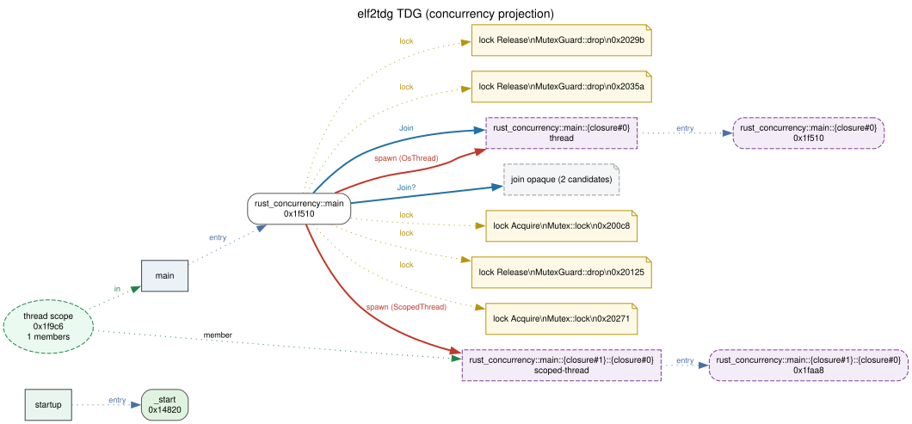
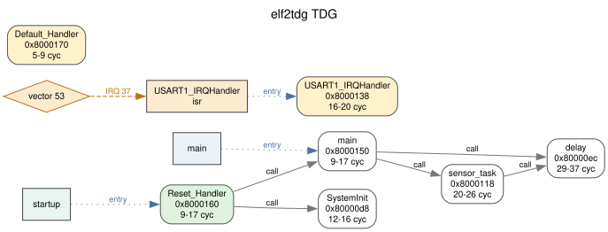

<!-- Artifact-tool source; the standalone page is tdg-example.html. -->
<title>elf2tdg 可视化示例</title>
<meta name="claude:viewport-fit-sides" content="cover">
<link rel="stylesheet" href="https://fonts.googleapis.com/css2?family=IBM+Plex+Mono:wght@400;500&family=IBM+Plex+Sans:wght@400;500;600&family=Space+Grotesk:wght@500;600&display=swap">
<style>
  :root {
    --bg: #f4f7f6;
    --surface: #ffffff;
    --surface-2: #eaf1f0;
    --fg: #142022;
    --muted: #5a6b6d;
    --line: #d3dee0;
    --accent: #0c5d64;
    --accent-soft: #e1f0f0;
    --diagram-bg: #ffffff;
    --code-bg: #10282c;
    --code-fg: #dcefed;
    --code-muted: #8fb6b8;
    --red: #c0392b;
    --blue: #2471a3;
    --purple: #7d3c98;
    --green: #1e8449;
    --orange: #b9770e;
    --teal: #117a65;
    --ctx-startup: #e8f6ef;
    --ctx-main: #eaf2f8;
    --ctx-thread: #f4ecf7;
    --ctx-async: #e8daef;
    --ctx-isr: #fdebd0;
    --ctx-kernel: #e5e7e9;
    --font-body: "IBM Plex Sans", "PingFang SC", "Microsoft YaHei", "Noto Sans CJK SC", system-ui, sans-serif;
    --font-display: "Space Grotesk", "IBM Plex Sans", "PingFang SC", "Microsoft YaHei", system-ui, sans-serif;
    --font-mono: "IBM Plex Mono", "SFMono-Regular", Consolas, "Liberation Mono", monospace;
    --radius: 10px;
    --maxw: 1160px;
  }
  @media (prefers-color-scheme: dark) {
    :root:not([data-theme="light"]) {
      --bg: #0d1416;
      --surface: #152024;
      --surface-2: #1b2a2e;
      --fg: #e4eeed;
      --muted: #9bafb1;
      --line: #2b3d41;
      --accent: #6ecbd1;
      --accent-soft: #123236;
      --diagram-bg: #ffffff;
      --code-bg: #081315;
      --code-fg: #d7efed;
      --code-muted: #81a8aa;
      color-scheme: dark;
    }
  }
  :root[data-theme="dark"] {
    --bg: #0d1416;
    --surface: #152024;
    --surface-2: #1b2a2e;
    --fg: #e4eeed;
    --muted: #9bafb1;
    --line: #2b3d41;
    --accent: #6ecbd1;
    --accent-soft: #123236;
    --diagram-bg: #ffffff;
    --code-bg: #081315;
    --code-fg: #d7efed;
    --code-muted: #81a8aa;
    color-scheme: dark;
  }
  * { box-sizing: border-box; }
  body {
    margin: 0;
    background: var(--bg);
    color: var(--fg);
    font-family: var(--font-body);
    font-size: 16px;
    line-height: 1.65;
    -webkit-font-smoothing: antialiased;
  }
  a { color: var(--accent); text-underline-offset: 3px; }
  a:hover { text-decoration-thickness: 2px; }
  a:focus-visible { outline: 2px solid var(--accent); outline-offset: 3px; }
  .page {
    max-width: var(--maxw);
    margin: 0 auto;
    padding-left: max(16px, env(safe-area-inset-left, 0px));
    padding-right: max(16px, env(safe-area-inset-right, 0px));
    padding-block: 36px 72px;
  }
  .masthead {
    display: grid;
    grid-template-columns: minmax(0, 1.6fr) minmax(240px, 0.8fr);
    gap: 32px;
    align-items: end;
    padding-block: 18px 34px;
    border-bottom: 1px solid var(--line);
  }
  .eyebrow, .kicker {
    display: inline-flex;
    align-items: center;
    gap: 8px;
    color: var(--accent);
    font-family: var(--font-mono);
    font-size: 0.73rem;
    font-weight: 500;
    letter-spacing: 0.11em;
    text-transform: uppercase;
  }
  .eyebrow::before {
    content: "";
    width: 18px;
    height: 2px;
    background: var(--accent);
  }
  h1, h2, h3 {
    font-family: var(--font-display);
    font-weight: 600;
    letter-spacing: -0.02em;
    text-wrap: balance;
  }
  h1 {
    margin: 14px 0 12px;
    font-size: clamp(2.15rem, 5.4vw, 4.5rem);
    line-height: 1.02;
    max-width: 14ch;
  }
  .lede {
    margin: 0;
    max-width: 62ch;
    color: var(--muted);
    font-size: 1.04rem;
  }
  .meta-stack {
    display: flex;
    flex-direction: column;
    gap: 8px;
    align-items: flex-start;
    padding-bottom: 4px;
  }
  .meta-stack code, .path {
    font-family: var(--font-mono);
    font-size: 0.78rem;
    background: var(--surface-2);
    border: 1px solid var(--line);
    border-radius: 5px;
    padding: 3px 7px;
    color: var(--fg);
    overflow-wrap: anywhere;
  }
  .meta-stack span { color: var(--muted); font-size: 0.85rem; }
  .pipeline {
    display: grid;
    grid-template-columns: 1fr auto 1fr auto 1fr;
    gap: 12px;
    align-items: stretch;
    margin-block: 26px 0;
  }
  .pipe-step {
    background: var(--surface);
    border: 1px solid var(--line);
    border-radius: var(--radius);
    padding: 14px 16px;
  }
  .pipe-step b {
    display: block;
    margin-bottom: 2px;
    font-family: var(--font-mono);
    font-size: 0.72rem;
    letter-spacing: 0.08em;
    color: var(--accent);
    text-transform: uppercase;
  }
  .pipe-step span { color: var(--muted); font-size: 0.9rem; }
  .pipe-arrow { align-self: center; color: var(--muted); font-family: var(--font-mono); }
  section { margin-top: 64px; }
  .section-head {
    display: grid;
    grid-template-columns: minmax(0, 1fr) minmax(220px, 0.55fr);
    gap: 28px;
    align-items: end;
    margin-bottom: 22px;
  }
  .section-head h2 {
    margin: 7px 0 0;
    font-size: clamp(1.65rem, 3.3vw, 2.55rem);
    line-height: 1.1;
  }
  .section-head p { margin: 0; color: var(--muted); font-size: 0.96rem; }
  .split {
    display: grid;
    grid-template-columns: minmax(0, 1.22fr) minmax(260px, 0.78fr);
    gap: 20px;
    align-items: start;
  }
  .card {
    background: var(--surface);
    border: 1px solid var(--line);
    border-radius: var(--radius);
    min-width: 0;
  }
  .card-pad { padding: 18px 20px; }
  .card-head {
    display: flex;
    justify-content: space-between;
    gap: 14px;
    align-items: baseline;
    padding: 13px 16px;
    border-bottom: 1px solid var(--line);
    background: var(--surface-2);
    border-radius: var(--radius) var(--radius) 0 0;
    font-family: var(--font-mono);
    font-size: 0.76rem;
    letter-spacing: 0.03em;
  }
  .card-head b { font-weight: 500; color: var(--fg); }
  .card-head span { color: var(--muted); }
  pre.code {
    margin: 0;
    padding: 18px 18px 20px;
    overflow-x: auto;
    background: var(--code-bg);
    color: var(--code-fg);
    border-radius: 0 0 var(--radius) var(--radius);
    font-family: var(--font-mono);
    font-size: 0.78rem;
    line-height: 1.7;
    tab-size: 4;
  }
  pre.code .c { color: var(--code-muted); }
  pre.code .k { color: #8fd3d9; }
  pre.code .n { color: #f0c987; }
  .findings { padding: 18px 20px; }
  .findings h3 { margin: 0 0 10px; font-size: 1.02rem; }
  .findings ul { margin: 0; padding-left: 1.2em; }
  .findings li { margin-block: 7px; color: var(--muted); }
  .findings li strong { color: var(--fg); font-weight: 600; }
  .stat-row {
    display: grid;
    grid-template-columns: repeat(4, minmax(0, 1fr));
    gap: 0;
    margin-top: 18px;
    border-top: 1px solid var(--line);
    border-bottom: 1px solid var(--line);
  }
  .stat {
    padding: 12px 10px;
    border-right: 1px solid var(--line);
  }
  .stat:last-child { border-right: 0; }
  .stat b {
    display: block;
    font-family: var(--font-display);
    font-size: 1.5rem;
    line-height: 1.1;
    font-variant-numeric: tabular-nums;
  }
  .stat span {
    display: block;
    margin-top: 3px;
    color: var(--muted);
    font-family: var(--font-mono);
    font-size: 0.67rem;
    letter-spacing: 0.04em;
    text-transform: uppercase;
  }
  .diagram-card { margin: 20px 0 0; overflow: hidden; }
  .diagram-scroll {
    overflow-x: auto;
    background: var(--diagram-bg);
    padding: 8px;
    text-align: center;
  }
  .diagram-scroll img {
    display: block;
    width: 100%;
    max-width: 100%;
    height: auto;
    margin-inline: auto;
  }
  .diagram-note {
    display: flex;
    justify-content: space-between;
    gap: 18px;
    align-items: baseline;
    padding: 13px 16px;
    border-top: 1px solid var(--line);
    color: var(--muted);
    font-size: 0.86rem;
  }
  .diagram-note a { white-space: nowrap; }
  .diagram-note code { font-family: var(--font-mono); font-size: 0.75rem; }
  .tag {
    display: inline-block;
    padding: 2px 7px;
    border: 1px solid var(--line);
    border-radius: 999px;
    color: var(--muted);
    font-family: var(--font-mono);
    font-size: 0.68rem;
    letter-spacing: 0.03em;
    white-space: nowrap;
  }
  .tag.warn { border-color: var(--orange); color: var(--orange); }
  .timing-table, .legend-table {
    width: 100%;
    border-collapse: collapse;
    font-size: 0.88rem;
  }
  .timing-table th, .timing-table td,
  .legend-table th, .legend-table td {
    padding: 9px 10px;
    border-bottom: 1px solid var(--line);
    text-align: left;
    vertical-align: middle;
  }
  .timing-table th, .legend-table th {
    color: var(--muted);
    font-family: var(--font-mono);
    font-size: 0.68rem;
    letter-spacing: 0.07em;
    text-transform: uppercase;
    font-weight: 500;
  }
  .timing-table td:last-child, .timing-table th:last-child { text-align: right; }
  .timing-table td { font-variant-numeric: tabular-nums; }
  .timing-table tr:last-child td, .legend-table tr:last-child td { border-bottom: 0; }
  .table-wrap { overflow-x: auto; }
  .legend-grid {
    display: grid;
    grid-template-columns: repeat(2, minmax(0, 1fr));
    gap: 20px;
    align-items: start;
  }
  .legend-card { min-width: 0; }
  .legend-card h3 { margin: 0; padding: 13px 16px; border-bottom: 1px solid var(--line); font-size: 1rem; }
  .chip {
    display: inline-flex;
    align-items: center;
    justify-content: center;
    min-width: 102px;
    min-height: 30px;
    padding: 5px 9px;
    border: 1px solid #555555;
    border-radius: 7px;
    background: var(--chip-bg, #ffffff);
    color: #142022;
    font-family: var(--font-mono);
    font-size: 0.7rem;
    line-height: 1.25;
    text-align: center;
  }
  .chip.dashed { border: 1px dashed var(--purple); background: var(--ctx-thread); }
  .chip.scope {
    min-width: 124px;
    min-height: 46px;
    border: 1px dashed var(--green);
    border-radius: 50%;
    background: var(--ctx-startup);
  }
  .chip.note {
    border: 1px dashed #999999;
    border-radius: 3px 3px 10px 3px;
    background: #f4f6f7;
  }
  .chip.function { border-radius: 999px; }
  .diamond {
    display: inline-block;
    width: 22px;
    height: 22px;
    margin-inline: 8px 6px;
    transform: rotate(45deg);
    border: 1px solid var(--orange);
    background: var(--ctx-isr);
    vertical-align: middle;
  }
  .edge {
    display: inline-flex;
    align-items: center;
    gap: 6px;
    min-width: 116px;
    color: var(--muted);
    font-family: var(--font-mono);
    font-size: 0.68rem;
  }
  .edge .line {
    position: relative;
    display: inline-block;
    width: 58px;
    height: 0;
    border-top: 3px solid var(--edge-color);
    border-top-style: var(--edge-style, solid);
  }
  .edge .line::after {
    content: "";
    position: absolute;
    right: -2px;
    top: -7px;
    border-left: 8px solid var(--edge-color);
    border-top: 4px solid transparent;
    border-bottom: 4px solid transparent;
  }
  .edge.dashed { --edge-style: dashed; }
  .edge.dotted { --edge-style: dotted; }
  .edge.spawn { --edge-color: var(--red); }
  .edge.join { --edge-color: var(--blue); }
  .edge.await { --edge-color: var(--purple); }
  .edge.call { --edge-color: #777777; }
  .edge.callback { --edge-color: var(--teal); }
  .edge.isr { --edge-color: var(--orange); }
  .edge.entry { --edge-color: var(--blue); }
  .edge.member { --edge-color: var(--green); }
  .confidence {
    display: grid;
    grid-template-columns: repeat(2, minmax(0, 1fr));
    gap: 10px 18px;
    padding: 16px;
    color: var(--muted);
    font-size: 0.88rem;
  }
  .confidence b { color: var(--fg); }
  .repro-grid {
    display: grid;
    grid-template-columns: minmax(0, 1.1fr) minmax(0, 0.9fr);
    gap: 20px;
  }
  .cmd-list { display: grid; gap: 12px; }
  .cmd-list code {
    display: block;
    overflow-x: auto;
    padding: 11px 13px;
    border: 1px solid var(--line);
    border-radius: 7px;
    background: var(--surface-2);
    color: var(--fg);
    font-family: var(--font-mono);
    font-size: 0.76rem;
    white-space: pre;
  }
  .file-table td { font-family: var(--font-mono); font-size: 0.74rem; }
  .file-table td:first-child { color: var(--muted); font-family: var(--font-body); font-size: 0.84rem; }
  footer {
    margin-top: 64px;
    padding-top: 18px;
    border-top: 1px solid var(--line);
    color: var(--muted);
    font-size: 0.82rem;
    display: flex;
    justify-content: space-between;
    gap: 16px;
    flex-wrap: wrap;
  }
  @media (max-width: 880px) {
    .masthead, .section-head, .split, .repro-grid { grid-template-columns: 1fr; }
    .meta-stack { flex-direction: row; flex-wrap: wrap; align-items: center; }
    .pipeline { grid-template-columns: 1fr; }
    .pipe-arrow { display: none; }
    .legend-grid { grid-template-columns: 1fr; }
    .diagram-scroll img { width: 1100px; max-width: none; }
    .stat-row { grid-template-columns: repeat(2, minmax(0, 1fr)); }
    .stat:nth-child(2) { border-right: 0; }
    .stat:nth-child(-n + 2) { border-bottom: 1px solid var(--line); }
  }
  @media (max-width: 480px) {
    .page { padding-block-start: 24px; }
    .diagram-note { flex-direction: column; gap: 6px; }
    .confidence { grid-template-columns: 1fr; }
  }
</style>

<main class="page" lang="zh-CN">
  <header class="masthead">
    <div>
      <div class="eyebrow">ELF → Task Dependency Graph</div>
      <h1>从可执行的 ELF，到可读的任务依赖图</h1>
      <p class="lede">
        两个已构建、已分析、已渲染的小例子：一个 Rust 线程与作用域程序，一个
        Cortex-M0 中断与计时固件。图中的每一个节点和边，都由仓库里的 ELF 现场生成。
      </p>
    </div>
    <div class="meta-stack" aria-label="环境与版本">
      <code>Rust 1.101 · x86-64</code>
      <code>ARM Cortex-M0 · 48 MHz</code>
      <code>TDG schema 1.2</code>
      <span>结果可复现，命令见页尾。</span>
    </div>
  </header>

  <div class="pipeline" aria-label="处理流程">
    <div class="pipe-step">
      <b>输入</b>
      <span>保留符号与 DWARF 的链接后 ELF。</span>
    </div>
    <div class="pipe-arrow" aria-hidden="true">→</div>
    <div class="pipe-step">
      <b>分析</b>
      <span>Capstone 反汇编、CFG、调用图、运行时规则与内联恢复。</span>
    </div>
    <div class="pipe-arrow" aria-hidden="true">→</div>
    <div class="pipe-step">
      <b>输出</b>
      <span>规范 JSON，加上 DOT / SVG / Mermaid 投影。</span>
    </div>
  </div>

  <section aria-labelledby="rust-title">
    <div class="section-head">
      <div>
        <div class="kicker">示例 1 · Rust</div>
        <h2 id="rust-title">线程、join 与作用域</h2>
      </div>
      <p>
        源码使用推荐的分析构建配置（<code>-O1</code>、完整 DWARF、ThinLTO、不 strip）。内联后的 spawn 调用点由 DWARF 恢复。
      </p>
    </div>

    <div class="split">
      <article class="card">
        <div class="card-head"><b>main.rs</b><span>std only · no third-party crates</span></div>
        <pre class="code"><code><span class="k">use</span> std::thread;

<span class="c">#[inline(never)]</span>
<span class="k">fn</span> <span class="n">sensor_sample</span>(seed: u32) -&gt; u32 {
    <span class="k">let mut</span> state = seed;
    <span class="k">for</span> _ <span class="k">in</span> 0..16 {
        state = state.wrapping_mul(1_664_525)
            .wrapping_add(1_013_904_223);
    }
    state
}

<span class="c">#[inline(never)]</span>
<span class="k">fn</span> <span class="n">process</span>(sample: u32) -&gt; u32 {
    sample.rotate_left(7) ^ 0x5a5a_5a5a
}

<span class="k">fn</span> <span class="n">main</span>() {
    <span class="k">let</span> worker = thread::spawn(|| {
        process(sensor_sample(0x1234_5678))
    });
    <span class="k">let</span> joined = worker.join().expect(<span class="c">"worker panicked"</span>);

    <span class="k">let</span> scoped = thread::scope(|scope| {
        <span class="k">let</span> handle = scope.spawn(|| {
            process(sensor_sample(0xfeed_face))
        });
        handle.join().expect(<span class="c">"scoped worker panicked"</span>)
    });

    println!(<span class="c">"joined={joined:#010x} scoped={scoped:#010x}"</span>);
}</code></pre>
      </article>

      <aside class="card findings">
        <h3>分析器恢复出了什么</h3>
        <ul>
          <li><strong>4 个执行上下文</strong>：startup、main、thread、scoped-thread。</li>
          <li><strong>2 条 spawn</strong>：<code>thread::spawn</code> 与 <code>Scope::spawn</code>，均为 high confidence。</li>
          <li><strong>2 条 join</strong>：普通线程与作用域线程。作用域本身带 1 个 member。</li>
          <li><strong>内联调用点可恢复</strong>：两条 spawn 从 DWARF <code>DW_TAG_inlined_subroutine</code> 记录恢复，入口标为逻辑 task entry。</li>
          <li><strong>不猜谜</strong>：第二个 join 同时看到两个候选，输出 opaque target 与候选列表。</li>
          <li><strong>锁语义</strong>：<code>Mutex::lock</code> 与 <code>MutexGuard::drop</code> 从 DWARF 内联栈恢复为 acquire/release 事件，并保留源码调用行。</li>
        </ul>
        <div class="stat-row" aria-label="analysis 结果统计">
          <div class="stat"><b>4</b><span>contexts</span></div>
          <div class="stat"><b>2</b><span>spawn</span></div>
          <div class="stat"><b>2</b><span>join</span></div>
          <div class="stat"><b>1</b><span>scope</span></div>
          <div class="stat"><b>5</b><span>lock events</span></div>
        </div>
      </aside>
    </div>

    <figure class="card diagram-card">
      <div class="card-head"><b>analysis profile · concurrency projection</b><span>DWARF 内联恢复 · 逻辑 task entry</span></div>
      <div class="diagram-scroll">
        <a href="rust-concurrency/artifacts/tdg-analysis-concurrency.svg" target="_blank" rel="noopener">
          
        </a>
      </div>
      <figcaption class="diagram-note">
        <span>紫色虚线边框表示合成的 logical task；<span class="tag warn">Join? · 2 candidates</span> 表示目标未唯一确定。<a href="rust-concurrency/artifacts/tdg-analysis-concurrency.svg" target="_blank" rel="noopener">完整 SVG ↗</a></span>
        <span><code>--projection concurrency</code></span>
      </figcaption>
    </figure>

    <div class="card card-pad" style="margin-top: 20px;">
      <div class="kicker" style="margin-bottom: 8px;">JSON 是规范输出</div>
      <pre class="code" style="border-radius: 7px;"><code>{
  "kind": "spawn",
  "api": "thread::spawn",
  "site": "0x1de3c",
  "runtime": "rust-std",
  "confidence": "high",
  "target": {
    "resolution": "context",
    "context": "ctx:thread:0x1de3c",
    "entry": "fn:0x1dc00"
  }
}</code></pre>
    </div>
  </section>

  <section aria-labelledby="cm-title">
    <div class="section-head">
      <div>
        <div class="kicker">示例 2 · Cortex-M0</div>
        <h2 id="cm-title">中断、调用链与周期估算</h2>
      </div>
      <p>
        一个 freestanding 的 Cortex-M0 镜像：复位、main 循环、传感器调用链，
        以及挂在 vector 53 / IRQ 37 上的 USART1 中断。
      </p>
    </div>

    <div class="split">
      <article class="card">
        <div class="card-head"><b>main.c · 关键片段</b><span>arm-none-eabi-gcc · -O0 -g</span></div>
        <pre class="code"><code><span class="c">/* vector 53 = USART1 IRQ 37 */</span>
<span class="k">void</span> <span class="n">USART1_IRQHandler</span>(<span class="k">void</span>) {
    ticks++;
}

<span class="k">int</span> <span class="n">main</span>(<span class="k">void</span>) {
    sensor_task();
    <span class="k">for</span> (;;) {
        delay(100);
    }
}

<span class="c">/* ... Reset_Handler -> SystemInit / main ... */</span>

__attribute__((section(<span class="c">".isr_vector"</span>), used))
<span class="k">void</span> (*<span class="k">const</span> vector_table[54])(<span class="k">void</span>) = {
    [0] = (<span class="k">void</span> (*)(<span class="k">void</span>))0x20001000u,
    [1] = Reset_Handler,
    [2 ... 15] = Default_Handler,
    [16] = Default_Handler,
    [17 ... 52] = Default_Handler,
    [53] = USART1_IRQHandler,
};</code></pre>
      </article>

      <aside class="card">
        <div class="card-head"><b>48 MHz 静态块和</b><span>Cortex-M0 模型 · bounded</span></div>
        <div class="card-pad" style="padding-bottom: 8px;">
          <div class="table-wrap">
            <table class="timing-table">
              <thead><tr><th>函数</th><th>cycles</th><th>time</th></tr></thead>
              <tbody>
                <tr><td><code>USART1_IRQHandler</code></td><td>16–20</td><td>333–417 ns</td></tr>
                <tr><td><code>sensor_task</code></td><td>20–26</td><td>417–542 ns</td></tr>
                <tr><td><code>delay</code></td><td>29–37</td><td>604–771 ns</td></tr>
                <tr><td><code>Reset_Handler</code></td><td>9–17</td><td>188–354 ns</td></tr>
              </tbody>
            </table>
          </div>
          <p style="margin: 12px 0 0; color: var(--muted); font-size: 0.78rem;">
            这些是基本块静态成本之和，不是路径时间，也不是 WCET 界。循环次数与流水线效应未计入。
          </p>
        </div>
      </aside>
    </div>

    <figure class="card diagram-card">
      <div class="card-head"><b>full projection · call graph</b><span>7 functions · 3 contexts · vector 53</span></div>
      <div class="diagram-scroll">
        <a href="cortex-m0-isr/artifacts/tdg-full.svg" target="_blank" rel="noopener">
          
        </a>
      </div>
      <figcaption class="diagram-note">
        <span>橙色菱形是硬件 vector；虚线橙色边是 <code>isr-activate</code>。<a href="cortex-m0-isr/artifacts/tdg-full.svg" target="_blank" rel="noopener">完整 SVG ↗</a></span>
        <span><code>--cpu cortex-m0 --freq 48MHz</code></span>
      </figcaption>
    </figure>
  </section>

  <section aria-labelledby="legend-title">
    <div class="section-head">
      <div>
        <div class="kicker">Reading the graph</div>
        <h2 id="legend-title">图例</h2>
      </div>
      <p>
        节点形状表达“这是什么”，颜色和线型表达“关系有多确定”。
        同样的图例由 <code>--legend</code> 自动写进 DOT 和 Mermaid。
      </p>
    </div>

    <div class="legend-grid">
      <article class="card legend-card">
        <h3>节点</h3>
        <div class="table-wrap">
          <table class="legend-table">
            <thead><tr><th>外观</th><th>含义</th></tr></thead>
            <tbody>
              <tr><td><span class="chip function" style="--chip-bg:#ffffff">function</span></td><td>普通函数；标签带地址与可选周期和</td></tr>
              <tr><td><span class="chip" style="--chip-bg:var(--ctx-startup)">startup</span></td><td>启动 / 复位上下文</td></tr>
              <tr><td><span class="chip" style="--chip-bg:var(--ctx-main)">main</span></td><td>主线程 / 主任务上下文</td></tr>
              <tr><td><span class="chip" style="--chip-bg:var(--ctx-thread)">thread</span></td><td>OS 线程或 scoped-thread</td></tr>
              <tr><td><span class="chip" style="--chip-bg:var(--ctx-async)">async-task</span></td><td>异步任务或 executor</td></tr>
              <tr><td><span class="chip" style="--chip-bg:var(--ctx-isr)">isr</span></td><td>中断 / 异常上下文</td></tr>
              <tr><td><span class="chip dashed">logical task</span></td><td>综合出的逻辑 task entry/context</td></tr>
              <tr><td><span class="chip scope">scope</span></td><td>结构化并发作用域</td></tr>
              <tr><td><span class="diamond" aria-hidden="true"></span>vector / IRQ</td><td>Cortex-M 向量与 IRQ 源</td></tr>
              <tr><td><span class="chip note">opaque target</span></td><td>目标未唯一确定，候选在 JSON 中</td></tr>
            </tbody>
          </table>
        </div>
      </article>

      <article class="card legend-card">
        <h3>关系</h3>
        <div class="table-wrap">
          <table class="legend-table">
            <thead><tr><th>样式</th><th>关系</th></tr></thead>
            <tbody>
              <tr><td><span class="edge call"><span class="line"></span>call</span></td><td>直接调用；tail 用虚线灰</td></tr>
              <tr><td><span class="edge spawn"><span class="line"></span>spawn</span></td><td>创建上下文；低置信度改为虚线并加 <code>?</code></td></tr>
              <tr><td><span class="edge join"><span class="line"></span>join</span></td><td>等待 / 终止上下文</td></tr>
              <tr><td><span class="edge await"><span class="line"></span>await</span></td><td>异步等待</td></tr>
              <tr><td><span class="edge callback dashed"><span class="line"></span>callback</span></td><td>回调 / 定时器 / 工作队列注册</td></tr>
              <tr><td><span class="edge isr dashed"><span class="line"></span>ISR</span></td><td>vector → ISR 上下文</td></tr>
              <tr><td><span class="edge isr dotted"><span class="line"></span>preempts</span></td><td>派生的抢占关系</td></tr>
              <tr><td><span class="edge entry dotted"><span class="line"></span>entry</span></td><td>上下文 → 入口函数</td></tr>
              <tr><td><span class="edge member dotted"><span class="line"></span>member</span></td><td>scope 拥有的 spawn / 进入上下文</td></tr>
            </tbody>
          </table>
        </div>
      </article>
    </div>

    <div class="card" style="margin-top: 20px;">
      <div class="card-head"><b>置信度与投影</b><span>不静默猜测</span></div>
      <div class="confidence">
        <div><b>实线粗边</b>：high 或 medium confidence。</div>
        <div><b>虚线粗边 + ?</b>：low / unknown confidence，或目标未解析。</div>
        <div><b>灰色 note</b>：opaque target，候选数可读，完整列表在 JSON。</div>
        <div><b>concurrency 投影</b>：省略普通 call 边，只保留上下文、scope 与并发控制关系。</div>
      </div>
    </div>
  </section>

  <section aria-labelledby="repro-title">
    <div class="section-head">
      <div>
        <div class="kicker">Reproduce</div>
        <h2 id="repro-title">重新生成</h2>
      </div>
      <p>所有图都由本仓库的 ELF 和 <code>elf2tdg</code> 现场生成。离线环境可加 <code>CARGO_FLAGS=--offline</code>。</p>
    </div>

    <div class="repro-grid">
      <div class="card card-pad">
        <div class="cmd-list">
          <code>make -C examples/rust-concurrency CARGO_FLAGS=--offline</code>
          <code>make -C examples/cortex-m0-isr CARGO_FLAGS=--offline</code>
          <code>dot -Tsvg examples/rust-concurrency/artifacts/tdg-analysis-concurrency.dot -o out.svg</code>
        </div>
        <p style="margin: 14px 0 0; color: var(--muted); font-size: 0.84rem;">
          Rust 示例需要 host <code>rustc</code>；嵌入式示例需要 <code>arm-none-eabi-gcc</code>。
          两者都需要 Graphviz 的 <code>dot</code> 来生成 SVG。
        </p>
      </div>

      <div class="card">
        <div class="card-head"><b>仓库内产物</b><span>源文件与已生成结果</span></div>
        <div class="table-wrap">
          <table class="legend-table file-table">
            <tbody>
              <tr><td>Rust 源码</td><td>examples/rust-concurrency/main.rs</td></tr>
              <tr><td>Rust ELF</td><td>examples/rust-concurrency/artifacts/rust-concurrency-analysis.elf</td></tr>
              <tr><td>Rust TDG</td><td>examples/rust-concurrency/artifacts/tdg-analysis.json</td></tr>
              <tr><td>C 源码</td><td>examples/cortex-m0-isr/main.c</td></tr>
              <tr><td>嵌入式 ELF</td><td>examples/cortex-m0-isr/artifacts/cortex-m0-isr.elf</td></tr>
              <tr><td>嵌入式 TDG</td><td>examples/cortex-m0-isr/artifacts/tdg.json</td></tr>
            </tbody>
          </table>
        </div>
      </div>
    </div>
  </section>

  <footer>
    <span>elf2tdg · schema 1.2 · Rust 优先的实时系统分析</span>
    <span>ELF → CFG → Contexts → JSON / DOT / SVG / Mermaid</span>
  </footer>
</main>
